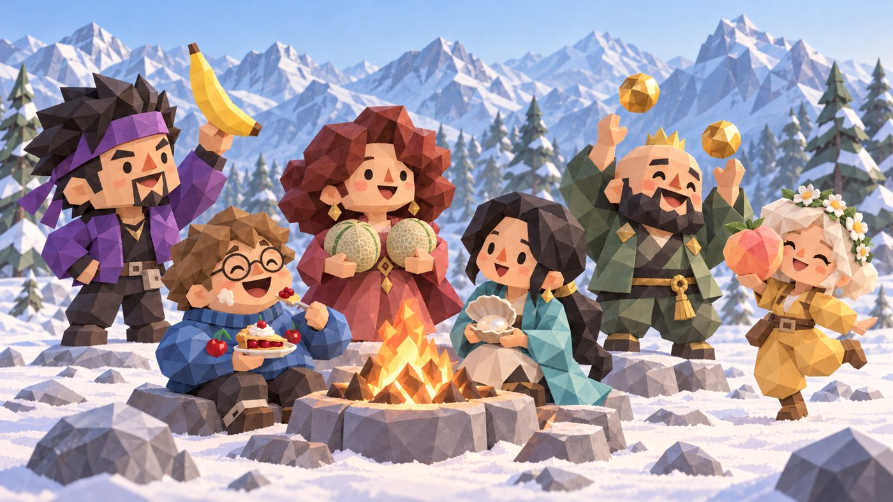

MBTIはもう要りません。たった58問で、あなたの中に眠るBDE・BCE・BKE……全8エネルギーを測定。就活にも恋愛にも、たぶん使えます。
登録不要・無料・回答の中身はどこにも送信されません（何人が受けたかなどの人数だけを匿名で集計しています） ／ ※下ネタではありません。科学でございます。
直感で答えてください。理想の自分ではなく、いまの自分で。見栄を張るとBDEが測れません。
六角形のどの頂点がいちばんでかいか。それがあなたの型です。
足りないエネルギーに変換を起こして、BKE（金玉）を貯める。人生はその繰り返しです。
1 / 5 ページ
六角形の頂点がそのまま型になります。高さ（リップ寄りかアナル寄りか）は型に添えて表示します。
人間は6つのエネルギーの六角形と、上下に伸びる「高さ」でできている。
この理論は、以下の動画で初めて世に発表されました。